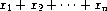
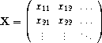

列表结构
8.1 enumerate
你可以用 enumerate 环境来得到有计数的列表。
下面这个列表用一个数字列表列举了一些基本的 ![[intro-Z-G-D-1.png]](intro-Z-G-D-1.png) 输入字符时的基
本要素。
输入字符时的基
本要素。
Hi, 今天是 五月 11, 2005。你可以用
\today输入今天的日 期。左边的双引号要用两个反引号
`表示，右边的双引号 用两个单引号表示'.这些字符 $ & % # _ { } ~ ^ 要这样输入：
\$ \& \% \# \_ \{ \} \~{} \^{}你可以用
\verb|something|原封不动的输入某些特 殊的 TEX符号。比如\verb|\documentclass{article}|得到\documentclass{article}.Use
\textbf{something}to enter something with font Bold Weight.Use
\textsf{something}to enter something with font Sans Serif.\bfseriescan change all the text follows to bold face, until the group ends.你可以用改变字体大小的命令
{\tiny tiny \scriptsize scriptsize \footnotesize footnotesize \small small \normalsize normalsize(default) \large large \Large Large \LARGE LARGE \huge huge \Huge Huge.}结果是：
tiny scriptsize footnotesize small normalsize(default) large Large LARGE huge Huge.
TEX里有三种不同的横线:
emdash
,endash
和hyphen
。emdash 就是“破折号”，用3根
-
(减号)表示: He lay there -- dead.endash 用来连接一个范围，用2根减号表示: from 10-12
hyphen 就是连字号，就是一根减号: state-of-the-art.
不要使用
...
(三个点) 来表示省略号。因为它们挤得很紧，不 好看。在正文中你应该用\ldots表示省略号。看看这个 ...是不是好看多了？其实 TEX里有好几种不同的省略号，你应该在适当的地方使用适当 的省略号，这样你的文档才会好看。
\ldots(...): 用于位置较低的符号，比如 ,
, ..., .
,
, ..., .
$\cdots$(): 用于位置较高的符号，比如 .$\vdots$() 和$\ddots$(), 主要用于矩阵里的省略表示，比如：\dotfill用于填充一行，就像某些目录里 的那些点线。
上面这个数字列表我是这样输入的：
\begin{enumerate}
\item Hi, 今天是 \today。你可以用 \verb+\today+ 输入今天的日
期。
\item 左边的双引号要用两个反引号 \verb|` 表示，右边的双引号
用两个单引号表示 '.
\item 这些字符 \$ \& \% \# \_ \{ \} \~{} \^{} 要这样输入：
\verb{
\$ \& \% \# \_ \{ \} \~{} \^{}
}
......
......
\item \tex 里有三种不同的横线: ``emdash'', ``endash'' 和
``hyphen''。
\begin{itemize}
\item emdash 就是“破折号”，用3根``-''(减号)表示: He lay there---dead.
\item endash 用来连接一个范围，用2根减号表示: from 10--12
.....
\end{itemize}
.....
\item \tex 里有几种不同的省略号:
\begin{enumerate}
\item \verb
ldots (\ldots): 用于位置较低的符号，比如 $a_1$,
$a_2$, \ldots, $a_n$.
\item \verb$\cdots$ ($\cdots$): 用于位置较高的符号，比如 $x_1+x_2+\cdots+x_n$.
.....
\end{enumerate}
.....
\end{enumerate}
8.2 列表的样式
enumerate 的各种样式可以用 CSS 设定，比如下面这些 CSS 样式 定义了：第1级数字列表用阿拉伯数字表示，第2级用小写字母，第3 级用罗马数字，第4级用大写字母。
ol {
list-style-type: decimal;
}
ol ol {
list-style-type: lower-alpha;
}
ol ol ol {
list-style-type: lower-roman;
}
ol ol ol ol {
list-style-type: upper-alpha;
}
回头看看我的第二层数字列表，是不是显示为小写字母编号 a., b., c., ...? 你可以试试加入第 3 层列表是不是显示为 i., ii., iii, iv, ...